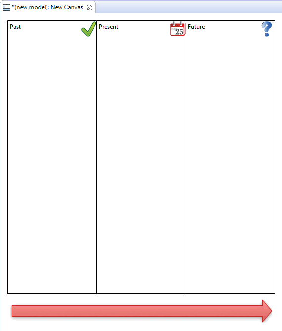

When the "My Images" Image Manager dialog window opens, select the "Open from File..." option and choose an appropriate image from your computer's file system. Do the same for the other Blocks.


Les composants et les concepts principaux qui constituent un canevas sont les blocs, les magnets, les images, les connexions, les astuces et les verrous. Un modèle de canevas comporte typiquement un certain nombre de blocs (verrouillés) et des images sur lesquels les utilisateurs peuvent ajouter des magnets, des images, des connexions et d'autres blocs si nécessaire. Les sections suivantes décriront chacun de ces concepts en détail en commençant par une description de la palette du canevas et par un exemple de construction d'un canevas fictif.
Quand on travaille avec un canevas, la palette vous propose les outils dont vous avez besoin pour créer ces éléments.
La palette du canevas
Choisissez un outil dans la palette et tirez-le dans le canevas. Les rectangles colorés représentent des "Magnets". Notez que vous n'êtes pas limité aux couleurs fournies et que vous pouvez modifier la couleur de votre magnet dans la fenêtre des prprpiétés. De la même façon, vous pouvez modifier le type de trait et de la pointe de la flèche dans la fenêtre des propriétés.
Suivons le processus de construction d'un cavenas destiné à cartographier des concepts passés, présents et futurs.
Supposons que vous avez choisi un modèle dans l'arborescence des modèles, suivez ces trois étapes:
Adding Hints and Locking
For the finishing touches let's add some Hints to the Blocks and then lock them so that we can re-use the Canvas as a Template. Why do we want to add Hints to the Blocks? Well, as with the other elements in Archi models it's extremely helpful to provide a rubric that suggests to the end user the intent of the element and how it can be used in the model. Let's add the hints:

Now that we have created the Blocks, added an Image, provided the Hints and locked the elements we can save the whole thing as a Canvas Template and then create new instances of the Canvas from the template. See the sections "Saving a Canvas as a Template" and
"Creating a New Canvas from a Template" to do this.
Creating a new Canvas instance from the template means we can now start using it for real:

Our imaginary Canvas
For more ideas, look at how the built-in Canvas templates are constructed for further examples. See the section "Creating a New Canvas from a Template".
 Archi uses a different file format for "*.archimate" files when adding Canvasses that contain images.
Archi uses a different file format for "*.archimate" files when adding Canvasses that contain images.
Normally Archi saves "*.archimate" files as single plain text XML format files. However, when images are used in a Canvas the file format used is a binary archive file (zip format) that contains both the model's XML file and any image files. This is to keep all related files together ensuring that you don't have to worry about managing the image files.